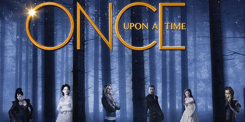

Once Upon a Time
A série se passa na cidade fictícia de Storybrooke, no Maine, cujos moradores são todos personagens de contos de fadas que foram transportados da Floresta Encantada para o "mundo real" através de uma poderosa maldição obtida através de Rumplestiltskin e lançada pela Rainha Má Regina.
Após perderem a memória de suas vidas na Floresta Encantada, cada personagem ganhou uma nova identidade com empregos adaptados ao mundo moderno. A única esperança para eles reside em Emma Swan, filha de Branca de Neve e do Príncipe Encantado, que foi transportada ainda bebê para o mundo real, antes que a maldição fosse lançada.
Como tal, ela é a única destinada a quebrar a maldição e restaurar as memórias perdidas dos personagens. Emma é auxiliada por seu filho, Henry, o qual reencontrou recentemente depois de tê-lo entregado para a adoção logo após seu nascimento.
Henry tem um livro de contos de fadas, que contém as histórias que foram apagadas após a maldição, sendo também o responsável por fazer Emma acreditar na magia e quebrar a maldição, devolvendo a todos suas memórias. Henry também é o filho adotivo de Regina, criando um conflito e um interesse em comum entre as duas.
Os episódios geralmente têm um segmento que dá detalhes das vidas dos personagens no passado, que, quando colocados em ordem, adiciona uma peça ao enigma dos personagens e sua conexão com os eventos que precederam a maldição e suas consequências. O outro, definido no presente, segue um padrão semelhante com um resultado diferente, mas também entrega ideias similares.
Elenco
- Ginnifer Goodwin como Branca de Neve / Mary Margaret Blanchard
- Jennifer Morrison como Emma Swan
- Lana Parrilla como Rainha Má / Regina Mills
- Josh Dallas como Mendigo / Príncipe Encantado / David Nolan
- Jared S. Gilmore como Henry Mills
- Raphael Sbarge como Grilo Falante / Dr. Archibald Hopper
- Jamie Dornan como Caçador / Xerife Graham Humbert
- Robert Carlyle como Rumplestiltskin / Crocodilo / Fera / Sr. Gold
- Eion Bailey como Pinóquio / August Wayne Booth
- Emilie de Ravin como Belle / Lacey
- Meghan Ory como Chapeuzinho Vermelho / Lobo / Ruby
- Colin O'Donoghue como Killian Jones / Capitão Gancho
- Michael Raymond-James como Baelfire / Neal Cassidy
- Michael Socha como Will Scarlet / Valete de Copas / Rei Branco
- Rebecca Mader como Bruxa Má do Oeste / Zelena
- Sean Maguire como Robin Hood / Robin de Loxley